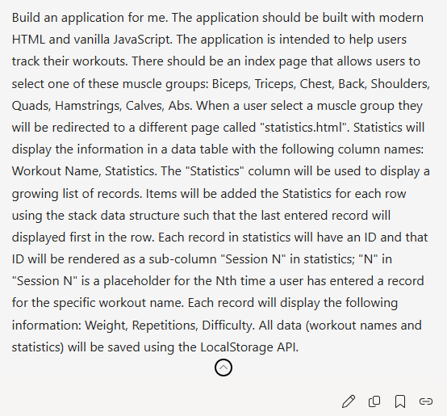
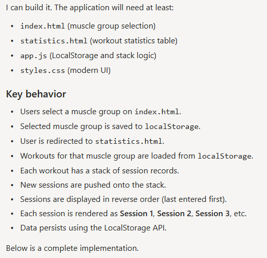
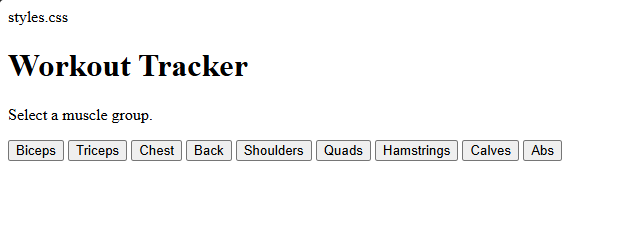
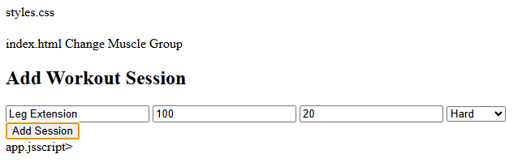
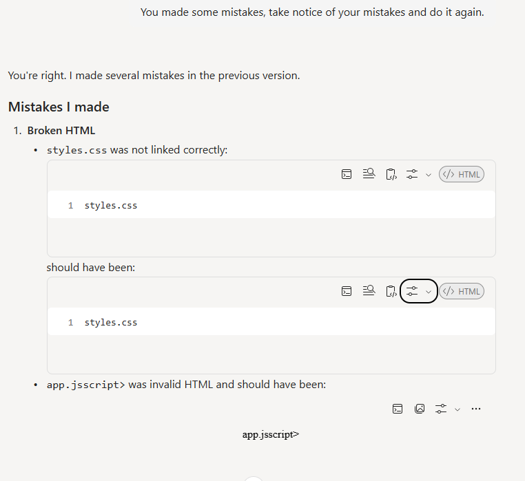
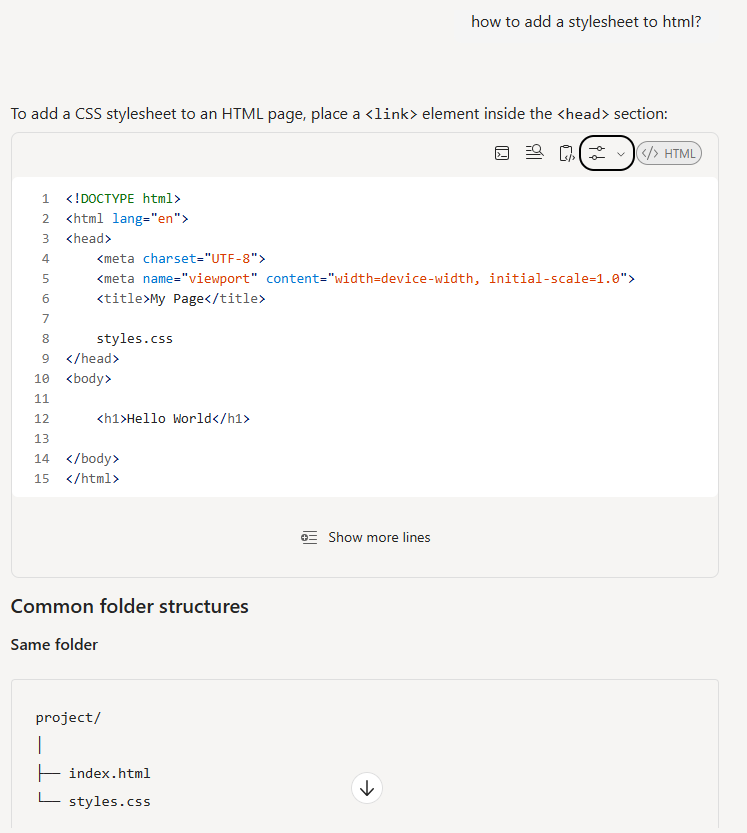
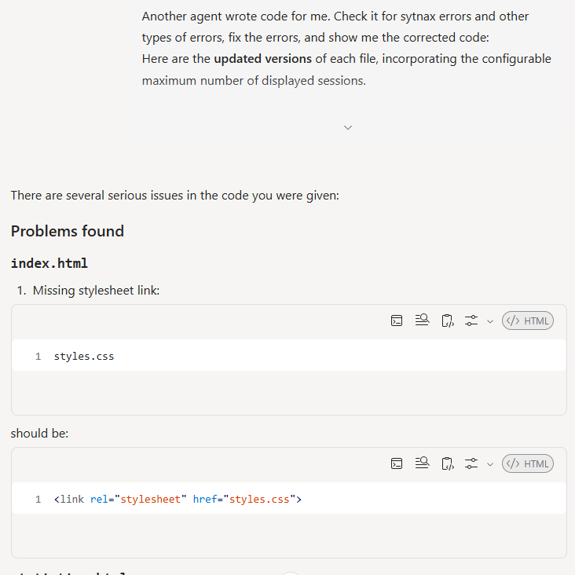
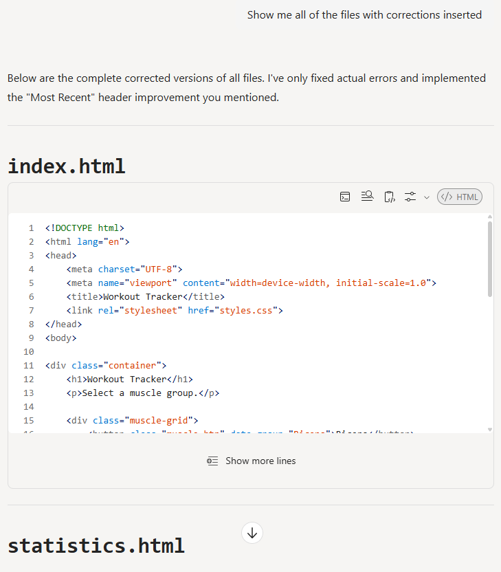
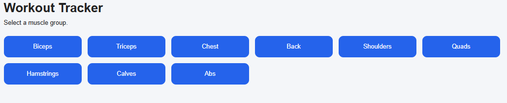
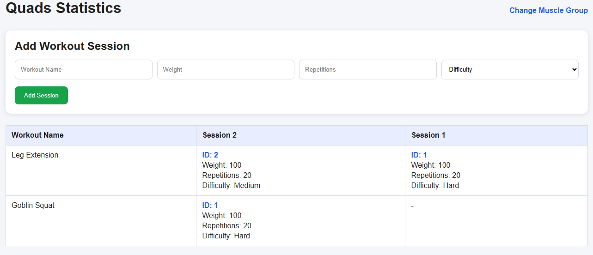

Incident
Investigating Code Generation Hallucinations
I made a cool web app recently. It's useful for tracking workouts. Check it out @https://diego-esquivel.github.io/Workout-Tracker/.
Here's the prompt I used to generate the code. It's basic, it's not all the "correct", there are no UML charts, and I made it up in 30 seconds - BUT it got the job done (a testatment to the power of LLMs).

Like most LLMs, the initial response was both confident and voberse:

Sadly, it was also filled with simple syntax errors. Notably, it didn't add the "link"j, "script", or "anchor" tag around the the appropriate stylesheet, app.js, or hyperlinks. This wasn't a very complicated app so I was highly dissapointed. In the LLMs defense, my prompt was not very good.


Next, I wanted to see if it could correct itself... it could talk about its mistakes but it could not actually correct them...

I also tried asking it for help but it gave me bad advice.

If you read my first post you'll notice this is an example of it saying 1 thing that is exaclty what I was talking about but everything else is totally wrong. The only sensible thing I could think to do now was to start a new agent!!

Instead of manually copy and pasting the correction, I asked it to summarize the results.

This resulted in good code (::).


For whatever reason, the first agent was only good at generating initial code and could not provide syntax help. The second agent could provide syntax help. This could be due to my poor prompt BUT investigating that is for another post.
I also could try sounding more professional, but I'm the whole thing process took 15 minutes so, not exactly worth my time.
Finally, If I try to use AI for a more sophisticated project I will be sure to provide it with a more advanced prompt. In the past, this has yielded mildly pleasant results. The art of prompt engineering feels promising.